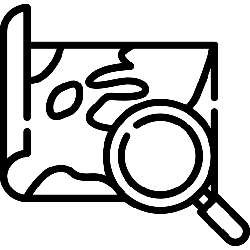
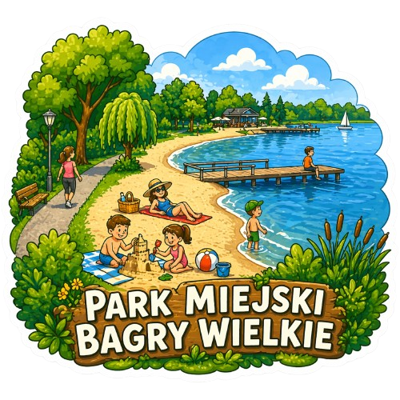

Propozycja wycieczki dla klasy
Rano
Ogród Doświadczeń albo Symbioza: warsztaty z prowadzącym.
Południe
Spacer terenowy: Las Witkowicki, Las Wolski lub Bagry.
Podsumowanie
Mapa obserwacji, zdjęcia znalezisk i klasowe eko-zobowiązanie.
Informacyjna mapa Krakowa


Lekcja o bioróżnorodności, ochronie gatunków i odpowiedzialnym zwiedzaniu. Dzieci porównują potrzeby zwierząt z różnych środowisk.
2-3 godz. klasy 1-4 spacer terenowy Strona atrakcji



Stacje badawcze pokazują energię, światło, wodę i zjawiska pogodowe. Świetny punkt na rozmowę o tym, jak działa natura.
1,5-2 godz. klasy 3-6 eksperymenty Strona atrakcji


Warsztaty o lesie, odpadach, wodzie i wyborach, które zmniejszają ślad środowiskowy. Dzieci pracują w małych zespołach.
1-2 godz. klasy 1-8 warsztaty Strona atrakcji
Krótka wyprawa z kartami obserwacji: liście, tropy, warstwy lasu i zasady cichego zachowania na ścieżce.
1,5 godz. klasy 1-5 obserwacje Strona atrakcji

Przystanek o mokradłach, ptakach wodnych i znaczeniu czystej wody w mieście. Dobrze działa z lornetkami i mini-notatnikiem.
1 godz. klasy 2-6 woda i ptaki Strona atrakcji

Zajęcia o jakości powietrza, zieleni miejskiej i prostych sposobach dbania o zdrowe otoczenie szkoły oraz domu.
1,5-2 godz. klasy 4-8 czyste powietrze Strona atrakcji
Spacer po miejskiej ostoi przyrody, podczas którego dzieci poznają rośliny łąkowe, owady zapylające i znaczenie zielonych enklaw.
1-1,5 godz. klasy 1-3 łąka i owady Strona atrakcji
Rano
Ogród Doświadczeń albo Symbioza: warsztaty z prowadzącym.
Południe
Spacer terenowy: Las Witkowicki, Las Wolski lub Bagry.
Podsumowanie
Mapa obserwacji, zdjęcia znalezisk i klasowe eko-zobowiązanie.